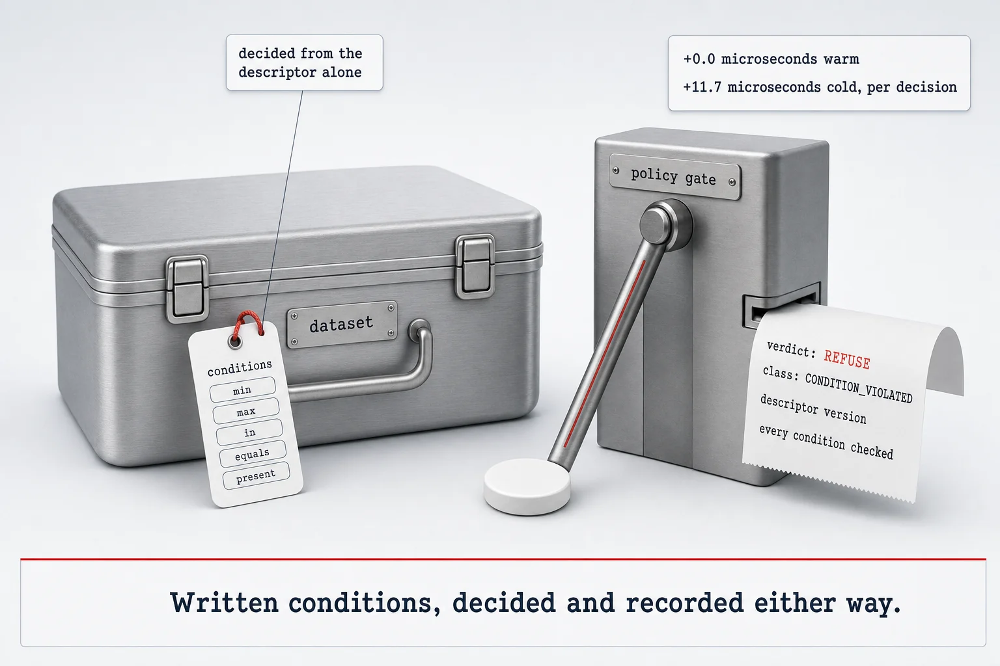

A policy profile for Croissant, the MLCommons dataset descriptor
Croissant can write down data-use conditions. No version of it specifies how any of them is evaluated.
What the descriptor leaves open, this closes: five operators, one verdict per request, and an audit trail behind it. Authority and conditions turn out to disagree in both directions, neither permit set containing the other, and the price of deciding is published rather than estimated at +0.0 µs warm, +11.7 µs cold.

No decision procedure, no bound on what a condition costs to check, no defined outcome for a condition an implementation cannot evaluate, and no record of what was checked.
This profile closes that: a dataset declares the operations it admits and the conditions under which it admits them, from a closed set of five operators, so a gate can decide from the descriptor alone and leave a decision record. Two carriers that decide identically are compared as whole decision records.
The measured result is the interesting one. Caller-side authority and data-side conditions disagree in both directions — each refuses requests the other admits, and neither permit set contains the other. Overhead disclosed rather than assumed: +0.0 µs warm, +11.7 µs cold per decision. All emitted documents load under mlcroissant 1.1.0 with zero errors.
Full-length article under review at the Journal of Web Semantics.
References
- Akhtar et al. (2024). Croissant: A Metadata Format for ML-Ready Datasets. DEEM '24, SIGMOD/PODS workshop, 1–6. doi:10.1145/3650203.3663326
- W3C (2018). ODRL Information Model 2.2. W3C Recommendation. w3.org/TR/odrl-model
- Lawson et al. (2021). The Data Use Ontology to streamline responsible access to human biomedical datasets. Cell Genomics 1(2), 100028. doi:10.1016/j.xgen.2021.100028
Zenodo 10.5281/zenodo.22018156w3id.org/croissant-policy/0.1.0ok-croissant-policy-profile